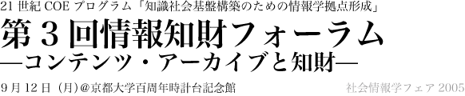

日時：９月１２日（月）１０：００開始
場所：京都大学百周年時計台記念館内百周年記念ホール
参加費：無料
21世紀の知識社会基盤を構築する上で、情報と知的財産の関わりがますます重要になってきています。このような背景の中、京都大学の知識基盤COEプログラムでは、情報分野における知的財産の取り扱いや、知的財産創出支援のための情報技術について研究を行なってきております。
今回のフォーラムでは、「コンテンツ・アーカイブと知財」をテーマとして、Web情報アーカイブの利活用とその知財の取り扱い、知財推進計画2005、京都大学の学術情報基盤と知財の取り扱いに焦点を絞り、産官学の立場からご講演をいただくとともに議論を深めることで研究の推進を図りたいと考えております。奮ってご参加頂きますようお願い申し上げます。